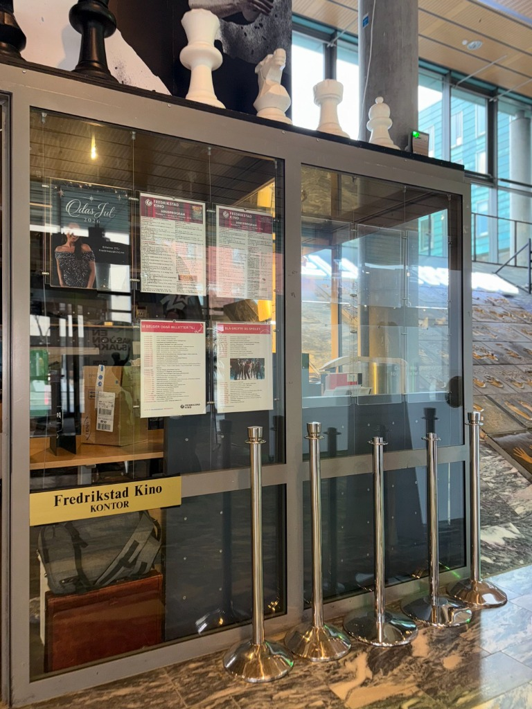

Besøkstallene på kino har ennå ikke hentet seg helt inn etter koronapandemien. Det gjelder også for Cathrine Haugen, administrerende direktør og kinosjef ved Fredrikstad kino.
Hun forteller at utviklingen i Fredrikstad følger den nasjonale trenden.
Besøket har gått litt ned på landsbasis etter pandemien. Det er ikke noen forskjell på Fredrikstad kino og de andre kinoene i landet, sier Haugen.
Ifølge kinosjefen skyldes noe av nedgangen at filmbransjen fortsatt merker konsekvensene av pandemien. Færre filmproductions under nedstengningen, kombinert med streiker i Hollywood, har ført til færre nye filmer på kino.

Drømmer om nye seter
Selv om publikumstallene har vært utfordrende, har kinoen investert i nytt teknisk utstyr de siste årene. Nå håper de å kunne gjennomføre neste store oppgradering.
- Vi har byttet ut alt det tekniske utstyret, men vi har ikke oppgradert setene våre. Vi er veldig sjalu på setene som både Halden og Sarpsborg har, sier Haugen.
Hun beskriver nye seter som et langsiktig mål, men understreker at prislappen er høy.
Drømmen og ambisjonen er å finne penger slik at vi også kan pusse opp salene våre, sier hun.
Satser på opplevelser
For å trekke flere mennesker til kinoen satser Fredrikstad kino på mer enn bare filmvisninger.
Premierearrangementer, jentekvelder og aktiviteter for barn er blant tiltakene som brukes for å gjøre kinobesøket til en større opplevelse. Dette er en strategi flere kinoer i landet benytter seg av.
Samtidig har markedsføringen blitt mer komplisert enn tidligere.
Før hadde du kinoprogram i avisen og TV-reklame, og da traff du nesten alle. Nå finnes det mange flere plattformer å være synlig på, sier Haugen.
Kinoen vurderer også å etablere seg på TikTok etter at virksomheten nylig ble omgjort til aksjeselskap.

Et lokalt kulturtilbud
Fredrikstad kino tilbyr fortsatt babykino, pensjonistkino og skolekino. Skoler, barnehager, lag og foreninger kan benytte rabatterte forestillinger gjennom skolekino ordningen.
Haugen mener det lokale eierskapet og nærheten til publikum er en viktig styrke.
Mitt inntrykk er at byen er veldig glad i kinoen sin. Folk i Fredrikstad er stolte av byen sin og kulturtilbudene som finnes her, sier hun.
Til tross for utfordringene i bransjen er hun optimistisk med tanke på framtiden. Så lenge publikum fortsetter å bruke tilbudene, ønsker kinoen å være et samlingspunkt for både unge, eldre og familier i byen.